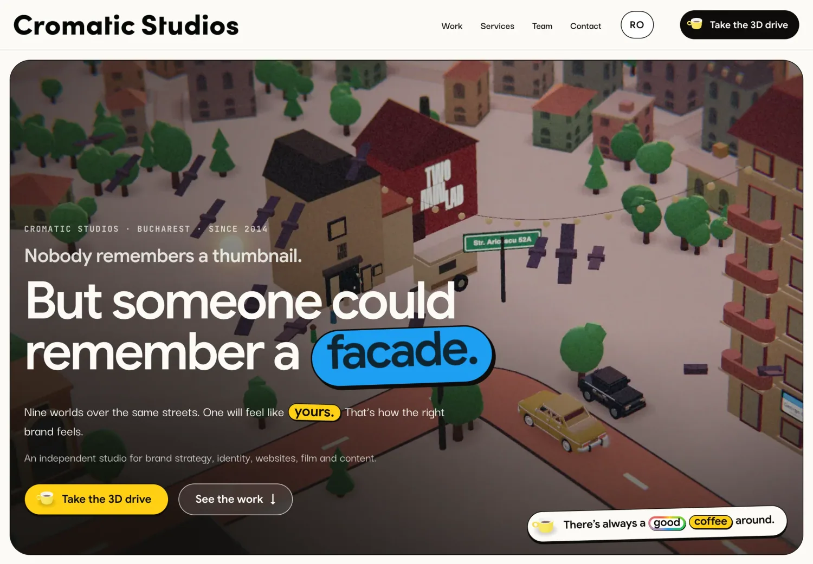
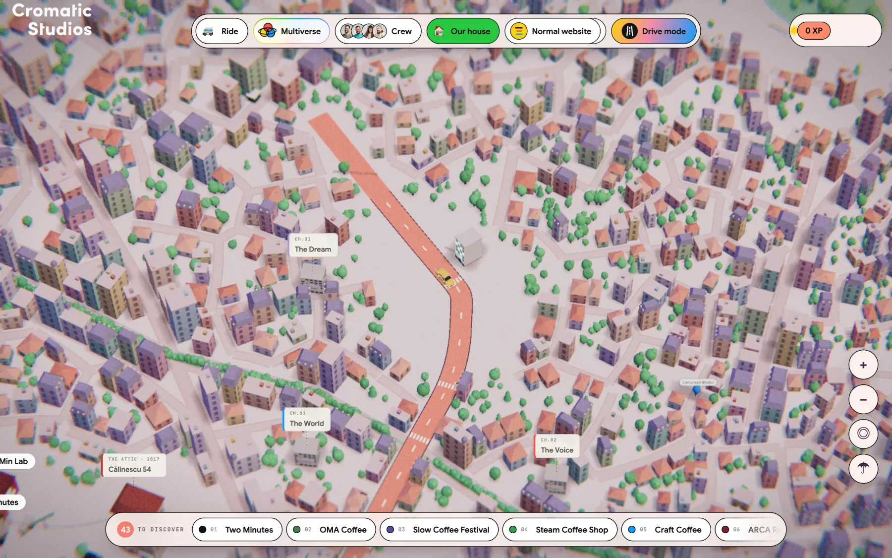
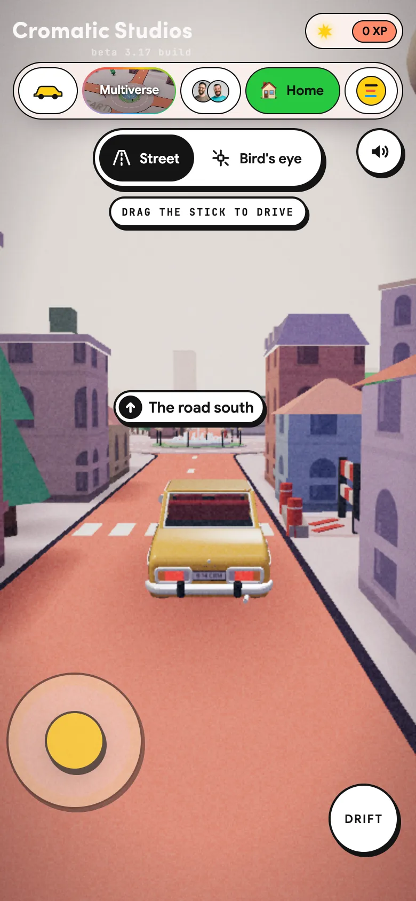

02 · The Drive
Drive it yourself.
The map is the city, and the car is yours. On a laptop: the arrows or W A S D, and hold Space to drift. On a phone: a joystick.
Cromatic Studios · The new website
A portfolio you can drive: Bucharest, rebuilt as a small 3D city. Every client is a building, every industry a street. Come and find the work.
Nine worlds over the same streets. One will feel like yours. That’s how the right brand feels. And like a good coffee.
The idea
Most studio portfolios are a grid of thumbnails. You scroll, you nod, you forget. We built a city instead. You drive in, you find the work by exploring, and you leave knowing what a brand is made of. And it still loads fast, reads well and shows up in search.
Why a city
Three ways in
One studio, one story, three ways to take it in. Pick the one that suits your mood, your device or your deadline.



Tap a place on the 3D map. The car drives you there, the camera swings round to the front door and a card opens with the project.
Take the wheel: the arrows or W A S D on a laptop, a joystick on a phone. Street view rides behind the car, Bird’s eye shows the whole city.
The same story as a fast, classic website. Content first, every case study on its own page, in English and Romanian.
From here on, the city behind the words is the real one. Live, not a video.
02 · The Drive
The map is the city, and the car is yours. On a laptop: the arrows or W A S D, and hold Space to drift. On a phone: a joystick.
02 · The Drive · Two views
Street view rides behind the car. Bird’s eye shows the city from above. Switch any time, or press V on a laptop.
02 · The Drive · Tap to go
Tap a place on the map, or the road, and the car takes you there. A card opens with the project, and on a laptop Nearby lists what’s around you. Steer, and the wheel is yours again.
02 · The Drive · The arcade
Outside Two Min Lab there’s an arcade cabinet: 2 Minutes 2 Fight w/ I O N. Pick a fighter from the crew and beat I O N. The batch brew at Two Minutes is on us.
02 · The Drive · Night Mode
Same street, after dark: windows light up, headlights come on, a light drizzle starts. This is Night Mode, one of the city’s worlds.
Above the clouds · Final call
The drive ends at Strada Olari 9, then goes even further. The contact form is a boarding pass: what are we dreaming about, what kind of business you are, when do we start. Fill it in, press “I want to come on board”, and a pass is printed with your name on it.
And then a surprise we will not spoil in words. Watch the screen.

Choose your brand multiverse
Tap a world, or keep scrolling and the city changes under you. Each one has its own light, and some bring their own ride.
One of these will feel like yours. That is what the right brand feels like.
Worlds · 01/08Night ModeLit windows, a drizzle on the roads and an all-chrome car.
Worlds · 02/08UnderwaterFish, kelp and a pineapple house. Bring a submarine.
Worlds · 03/08CromaticThe pastel diorama. Soft light, real shadows, the default everywhere.
Worlds · 04/08Ghib.lyGreen fields, sandy roads, an afternoon that never ends.
Worlds · 05/08SketchbookInk and crayon on a notebook page, sky included. It draws itself wherever you look.
Worlds · 06/08Race DayAsphalt roads, kerbs and a pit stop with a red roof.
Worlds · 07/08SakuraPink roads under cherry trees. Petals included.
Worlds · 08/08RisographPrinted in two inks, fluorescent pink and blue, a little off-register.
And a ninth, Polite City: the bonus world after dark, marked apart in the Multiverse menu.
Your ride
Want something else? There’s a submarine. Swap your ride any time, in the city or right here.
The rides · 01/09Vintage yellow rideThe one you start with, in most worlds.
The rides · 02/09Mystery vanThe default, before the yellow one took over.
The rides · 03/09Classic FormulaRed and white, nineties style. Race Day’s own.
The rides · 04/09Chrome racerAll chrome, like a board-game token. Night Mode’s own.
The rides · 05/09CropdusterThe only one that takes off.
The rides · 06/09E-scooterSakura’s ride, and Risograph’s too.
The rides · 07/09Kompus truckA food truck in Kómpus colours: dark grey, orange letters.
The rides · 08/09Polite PatrolA neighbourhood patrol classic. Yes, the beacon works.
The rides · 09/09Yellow submarineMade for Underwater. It floats along the road.
Gamification
The top bar is an XP bar. Every discovery pays: a chapter, a place on the map, a street, an espresso, the boxes of coffee, the boarding pass. Tap the bar and the experience journal drops down, with every gain and what you learned from it.
The more you discover, the more you learn. And the bar never lies.
03 · The Website
The classic website tells the same story with content first: no city to load, no waiting, every word indexable. It is where a journalist copies a quote and a CFO checks the client list.


Selected work
The studio · Strada Olari 9
Cromatic Studios started in 2014 with two people and a company name written on a napkin. It was founded by Daniel Stoicescu, still the studio's creative architect. Today it is led by two partners who are also brothers: Daniel, the founder, and Cristian Stoicescu, the CEO. Ten people, one house, Strada Olari 9, Bucharest.
On the drive you pass every address the studio ever had, each with its plate: Muniției 5, Călinescu 54, Eliade 18, Dacia 99, and Olari 9, today.


 CristianPartner · CEO & Strategy Master
CristianPartner · CEO & Strategy Master DanielFounder · Partner · Creative Architect
DanielFounder · Partner · Creative Architect AnaImpatient with the obvious
AnaImpatient with the obvious CozCalm on set, loud in the good ideas
CozCalm on set, loud in the good ideas AlexandraKnows where every promise lives
AlexandraKnows where every promise lives StefanAlready building it
StefanAlready building it AdinaListens first, writes second
AdinaListens first, writes second AnneThe crop, the colour, the pause
AnneThe crop, the colour, the pause IulicăBrings the energy into the frame
IulicăBrings the energy into the frame MelissaThe fresh pair of eyes
MelissaThe fresh pair of eyesPress, questions or a coffee: hi@cromaticstudios.com · +40 728 978 068
Cromatic Studios · Strada Olari 9, Bucharest · since 2014